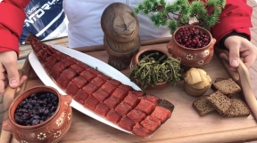
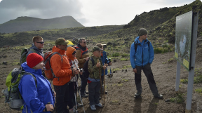
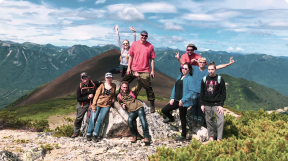

Путешествие на край света начинается
Ваша мечта осуществилась, вы приняли решение, и вам предстоит путешествие на край света.Этот маршрут лучший вариант для тех, кто хочет ощутить, как живёт самая молодая земля нашей планеты, многое увидеть, испытать на себе и полюбить, увезти целый рюкзак незабываемых чувств и впечатлений. Каждый день вы будете выезжать на радиальные маршруты, а проживать в комфортабельных двухместных номерах.
На протяжении маршрута вас ожидает:
Новый способ увидеть и услышать, то место, где вы находитесь. С помощью аудиогида вы сможете совершить увлекательную экскурсию по городу.

Каждый обед мы готовим с большой любовью. Кормим вас традиционными камчатскими блюдами. Еда - залог хорошего отдыха!

Наша команда проводит инструктаж, рассказывает как правильно себя вести, как избежать опасных ситуаций.

Можете не переживать, что не успели сделать фото. Наш фотограф успевает везде и за всеми. У вас будут самые лучшие фото!
День 8.Отъезд с Камчатки. Трансфер в аэропорт
Стоимость участия
- встреча и проводы в аэропорту
- питание: обеды во время экскурсий
- услуги гида
- все транспортные услуги ( автобусы, джипы-вездеходы 4WD)
- все указанные в программе экскурсии
- вертолётная экскурсия в Долину Гейзеров и кальдеру Узона, оплачивается в день вылета
- дополнительные экскурсии и опции
- размещение в гостинице
- питание(кроме обедов во время экскурсий)
- личные расходы